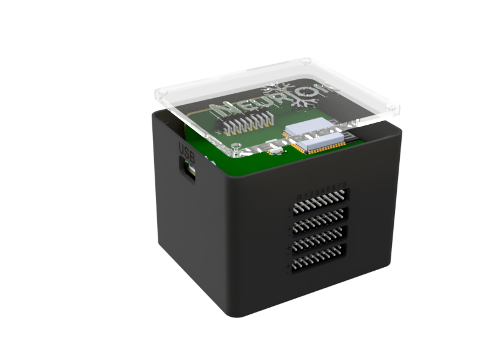
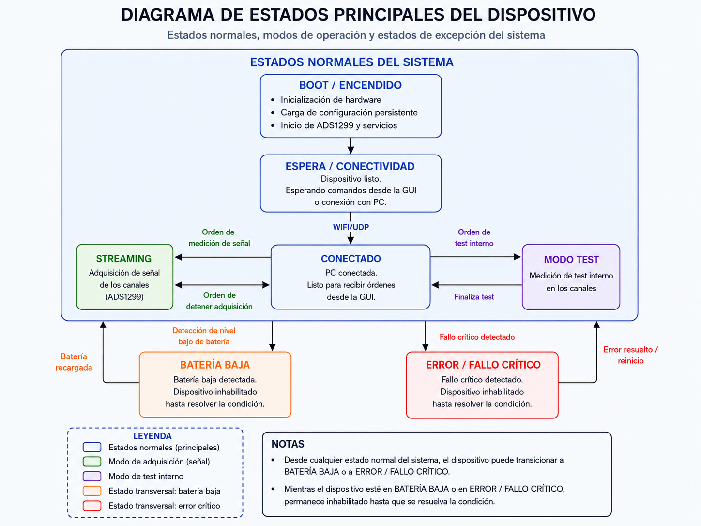

Plataforma educativa abierta para adquisición, visualización y configuración de biopotenciales.

El proyecto surge frente a la dificultad real de trabajar con señales fisiológicas en contextos educativos por costo, complejidad y falta de herramientas accesibles.
No se plantea como una réplica simplificada de un equipo comercial, sino como una plataforma educativa abierta para enseñar, experimentar y comprender el sistema completo.
La propuesta se organiza como un sistema integrado entre adquisición analógica, control embebido y operación desde una GUI de escritorio.
El sistema ya dejó de ser una suma de módulos aislados: hoy existe una integración funcional entre electrónica, firmware y GUI.

El valor del proyecto está en haber consolidado una base técnica real y, al mismo tiempo, dejar explícito un camino de mejora y validación futura.
Neurion LAB no se presenta como un producto cerrado, sino como una plataforma educativa abierta con identidad propia, resolución técnica concreta y un camino claro de evolución.